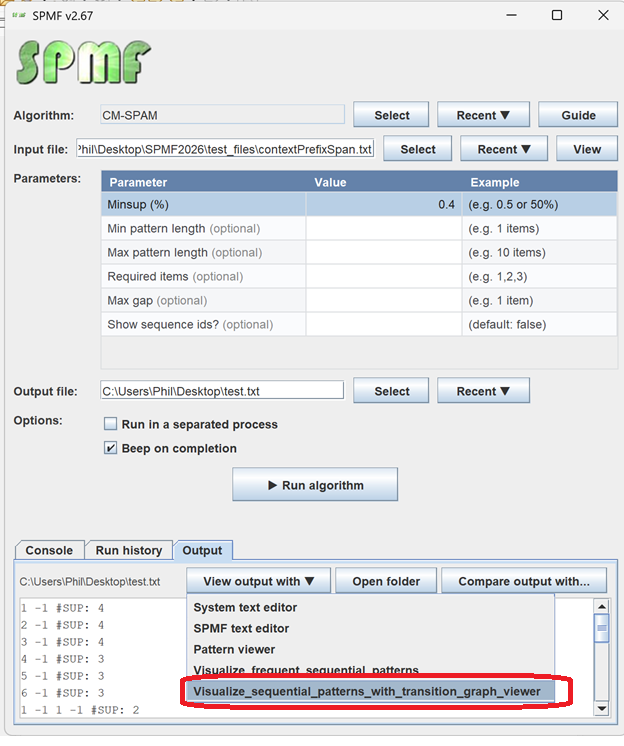
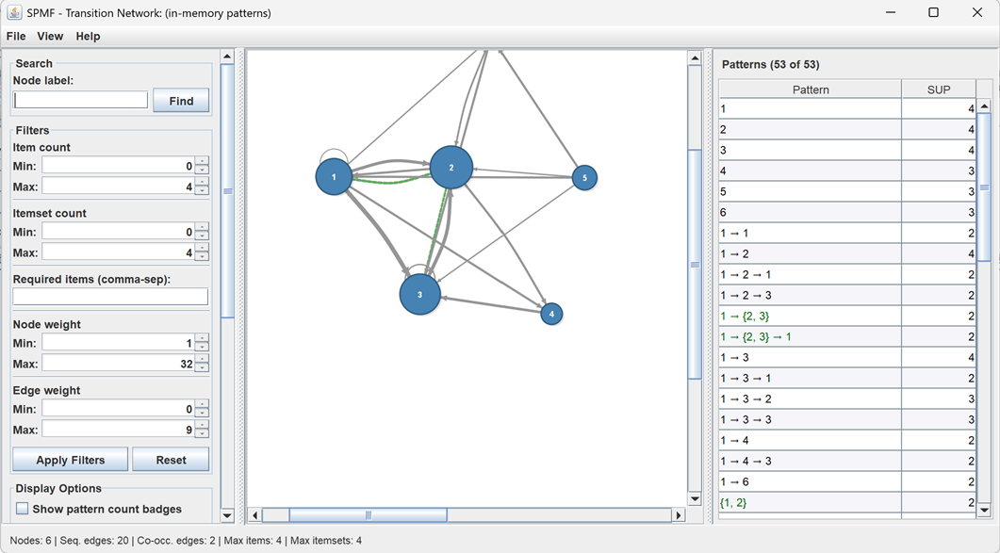

Visualizing Sequential Patterns with Transition Graph Viewer (SPMF documentation)
Sequential patterns are a type of patterns that can be discovered in sequence data by different algorithms offered in SPMF such as PrefixSpan and CM-SPAM.
This page explains how to visualize the sequential patterns found by an algorithm using the Transition Graph Viewer, to visually analyze the transition between elements in sequences..
How to run this example?
If you want to run this example using the graphical user interface of SPMF, follow these steps.
1) First, select a sequential pattern mining algorithm offered in SPMF. Several algorithms are offered such as PrefixSpan, CM-SPAM, CM-SPADE, GSP, and SUI, and are described in the documentation of SPMF.
2) Then, in the user interface of SPMF, after selecting an algorithm such as CM-SPAM and setting its input file path, output file path, and parameters, click on run algorithm button. Then, use the combo-box besides "Open output file using:", and select "Visualize_sequential_patterns_with_transition_graph_viewer" so that the discovered patterns will be opened with the Transition Graph Viewer.

The discovered patterns will be displayed using the Visual Pattern Viewer:

The Transition Graph Viewer interface is quite intuitive.
The center panel displays all patterns as a transition graph. The size of nodes and edges represent the support (larger means a greater support).
The left panel offers search and filtering functions.
The right panel displays the list of sequential patterns and their measures (such as support).
Other ways of running the Visual Pattern Viewer
It is also possible to run the Transition Graph Viewer Viewer as an algorithm from the GUI of SPMF.
In this case, in the user interface of SPMF, select "Visualize_sequential_patterns_with_transition_graph_viewer" as algorithm. Then, select a file containing sequential patterns as input file. Then, click "run algorithm".
This will display the patterns from the file using the Visual Pattern Viewer.
Besides, it is also possible to call the Transition Graph Viewer from the command line interface of SPMF. To open a file called patternsFrequentSequentialPatterns.txt, this syntax can be used:
java -jar spmf.jar run Visualize_sequential_patterns_with_transition_graph_viewer patternsFrequentSequentialPatterns.txt in a folder containing spmf.jar and the input file
What is the input file format?
The algorithm takes as input a file containing sequential patterns .
The file format is defined as follows. It
is a text file, where each line represents a sequential patterns . For example, this is a valid input file:
@FILETYPE="Frequent sequential patterns"
@SOURCE="SPMF SOFTWARE https://philippe-fournier-viger.com/spmf/"
1 -1 #SUP: 4
2 -1 #SUP: 4
3 -1 #SUP: 4
4 -1 #SUP: 3
5 -1 #SUP: 3
6 -1 #SUP: 3
5 -1 6 -1 #SUP: 2
6 -1 3 -1 #SUP: 2
2 -1 6 -1 #SUP: 2
6 -1 2 -1 #SUP: 2
1 -1 6 -1 #SUP: 2
6 -1 3 -1 2 -1 #SUP: 2
6 -1 2 -1 3 -1 #SUP: 2
5 -1 3 -1 #SUP: 2
5 -1 2 -1 #SUP: 2
5 -1 1 -1 #SUP: 2
Please refer to the documentation of specific sequential pattern mining algorithms to see their output format.